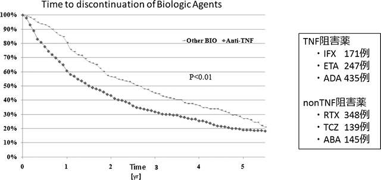

2nd-Bioは作用機序を変更した方が継続率が高い（Sophie論文）
目的：TNF阻害薬効果不十分RA患者へのTNF阻害薬とnon-TNF阻害薬の継続率を比較する。
方法：スイスのRAコホートの全患者からTNF阻害薬効果不十分例（1485例）の代替治療としてのTNF阻害薬（853例）とnon-TNF阻害薬(632例）の継続率を分析する

TNF阻害薬からの切替はTNFよりnon-TNFの方が有意に継続率が高い
目的：TNF阻害薬効果不十分RA患者へのTNF阻害薬とnon-TNF阻害薬の継続率を比較する。
方法：スイスのRAコホートの全患者からTNF阻害薬効果不十分例（1485例）の代替治療としてのTNF阻害薬（853例）とnon-TNF阻害薬(632例）の継続率を分析する
TNF阻害薬からの切替はTNFよりnon-TNFの方が有意に継続率が高い